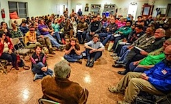

Friends,
Shortly after I turned 20 years old, in response to the Soviet invasion of Afghanistan, the U.S. government re-established compulsory draft registration. It was a public message that we were ready to invade Afghanistan, too. Failure to register could lead to five years in prison.
I didn't have to go to war; war had come to me.
For more than a century, FOR has been resisting war and practicing active nonviolence. Make a year-end donation today to help us continue the work.
I wasn't aware of the Fellowship of Reconciliation then. I was lucky to have friends who shared my values, and on the first day of draft registration, at a large protest at the Boston post office, we sat in together and were roughly arrested.
A few years later, people I knew were returning from Central America charged from the experience of social revolution and war and U.S. intervention, and inspired me to visit Nicaragua. I was moved by Nicaraguans' faith and determination, their literacy campaigns, and upset by U.S. support for attacks on health clinics and other civilian infrastructure.
Upon my return to the United States, I joined nonviolent actions to stop military intervention, and then went back to Central America to accompany Guatemalan women seeking their loved ones who'd been forcibly disappeared by state forces.
All the organizations I knew that focused on draft registration, and many Central America groups too, are gone now. It is hard for groups focused on a topical issue to thrive as times change.
So I feel fortunate to have connected with FOR, just as the Central America movement plateaued.
Why do I choose FOR? First, because of the people.
Because of George Houser, still promoting action for peace and justice at age 97. Because of the young people in FOR Peace Presence, living amid the spectacular and primitive countryside at war in northwestern Colombia to ensure the survival of a peasant community committed to nonviolence, to ending impunity, to farming their crops, and each other. Because of the young people who will participate in next summer's Future Is Now gathering in Minnesota. Because of the many steadfast activists who hold a light of faith-based nonviolence in communities across the country.
 Join me in choosing FOR with your tax-deductible donation this year. Join me in choosing FOR with your tax-deductible donation this year.
And don't forget that until Dec. 31, all new donors' contributions will be doubled -- and every donation of $15 or more will get you a free copy of Martin Luther King and the Montgomery Story!
I choose FOR because when most of the society is caught up in war and loses sight of war's brutal and lasting consequences, FOR's clarity and compassion are a refuge for creating something different.
Because after the September 11th attacks, FOR served as administrative and spiritual home to the September 11 Families for a Peaceful Tomorrow. Because FOR's executive director was the only speaker at the government-sponsored 50th anniversary commemoration of the March on Washington to speak against a military attack on Syria, premonition of the massive popular rejection that would follow.
Choose FOR to help us continue to resist war and violence, and contributions before Dec. 31 will be doubled.
I choose FOR because it had the foresight and staying power to support a five-year campaign in the 1990s for the closure and cleanup of U.S. military bases in Panama, in accordance with the Canal Treaties signed by President Carter, after the U.S. invasion there placed their closure in doubt -- and saw it through to win. And it did the same in support of the mass movement of Puerto Ricans to stop U.S. naval bombing in Vieques, Puerto Rico.
Choose FOR to help us roll back U.S. military bases in Latin America.
I choose FOR because it is a doorway for me to experience and embrace rich faith traditions I hadn't known directly, but are shared with me by Baptists and Buddhists, Muslims and Methodists. There are so many different ways of praying, of being consonant with our spirituality in word and action. FOR communities live that struggle to be true openly, publicly.
Choose FOR to celebrate our multifaith traditions of peace, justice, nonviolence and reconciliation.
We need organizations that can stretch to the times, and that will stretch us to meet the needs of the time.
Before the United States had forced millions of people of color into cages and deportation as part of the new Jim Crow and Juan Crow, FOR articulated a statement of purpose to "advocate fair and compassionate methods of dealing with offenders against society" as well as to "identify with ... victims of injustice and exploitation." Today, FOR groups and members from Chico, CA, to Greensboro, NC, from western Washington to Boston, are educating and organizing to transform the roots of mass incarceration.
We know we're not alone, and FOR by itself cannot effect the change and the globe that we envision.
We also know that our voices and work toward that world play a special role, calling forth the possible, deeply rooted in an utopian quest to use truth and love to resolve human conflict. Because the means we use flow directly into the outcome we must live. We all want a community of love, we all want it to be true, and together we can make it so.
That is my faith.
Join me in a year-end, tax-deductible donation to the Fellowship of Reconciliation. And remember that you must donate by the end of tomorrow to get your donation doubled -- and your free copy of Martin Luther King and the Montgomery Story!
John Lindsay-Poland
West Regional Organizer and Research Director
Fellowship of Reconciliation |